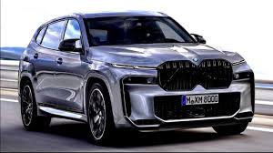

BMW X8
Prix: 55000€
La BMW X8 est un SUV de luxe haut de gamme qui incarne l'alliance entre élégance, performance et technologie de pointe.
Dotée d'un design audacieux et dynamique, la BMW X8 se distingue par ses lignes athlétiques et sa présence imposante sur la route. À l'intérieur, l'habitacle offre un mélange de sophistication et de confort, avec des matériaux de haute qualité et des équipements de pointe.
le capot, la BMW X8 propose une gamme de motorisations puissantes, allant des moteurs essence aux motorisations hybrides rechargeables, offrant des performances exceptionnelles tout en restant respectueuse de l'environnement.
La transmission intégrale xDrive de BMW assure une tenue de route optimale sur tous types de surfaces, garantissant une conduite sûre et agréable en toutes circonstances.
En termes de technologie, la BMW X8 est équipée des dernières innovations en matière d'assistance à la conduite, de connectivité et de divertissement.
Des fonctionnalités telles que l'assistant personnel intelligent de BMW, l'écran tactile central haute résolution et le système de navigation avancé font de chaque trajet à bord de la BMW X8 une expérience unique et personnalisée.